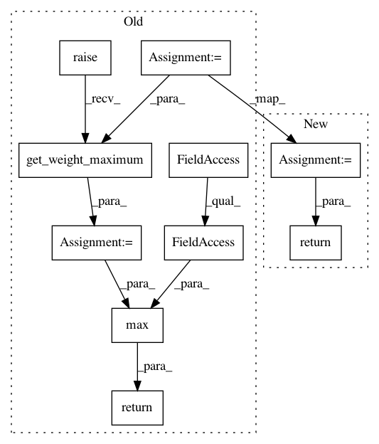

bb9f5f36c24eaa5cb320c9ef157cc9fbed295b10,spynnaker/pyNN/models/neuron/synapse_dynamics/synapse_dynamics_structural_static.py,SynapseDynamicsStructuralStatic,get_weight_maximum,#SynapseDynamicsStructuralStatic#Any#Any#,212
Before Change
@overrides(SynapseDynamicsStatic.get_weight_maximum)
def get_weight_maximum(self, connector, weights):
w_m = super(SynapseDynamicsStructuralStatic, self).get_weight_maximum(
connector, weights)
return max(w_m, self.__common_sp.initial_weight)
After Change
return self
@overrides(AbstractSynapseDynamicsStructural.write_structural_parameters)
def write_structural_parameters(
self, spec, region, machine_time_step, weight_scales,
application_graph, app_vertex, post_slice, graph_mapper,
routing_info, synapse_indices):
super(SynapseDynamicsStructuralStatic, self).write_parameters(
In pattern: SUPERPATTERN
Frequency: 3
Non-data size: 10
Instances
Project Name: SpiNNakerManchester/sPyNNaker
Commit Name: bb9f5f36c24eaa5cb320c9ef157cc9fbed295b10
Time: 2019-10-28
Author: andrew.gait@manchester.ac.uk
File Name: spynnaker/pyNN/models/neuron/synapse_dynamics/synapse_dynamics_structural_static.py
Class Name: SynapseDynamicsStructuralStatic
Method Name: get_weight_maximum
Project Name: SpiNNakerManchester/sPyNNaker
Commit Name: bb9f5f36c24eaa5cb320c9ef157cc9fbed295b10
Time: 2019-10-28
Author: andrew.gait@manchester.ac.uk
File Name: spynnaker/pyNN/models/neuron/synapse_dynamics/synapse_dynamics_stdp.py
Class Name: SynapseDynamicsSTDP
Method Name: get_weight_maximum
Project Name: SpiNNakerManchester/sPyNNaker
Commit Name: bb9f5f36c24eaa5cb320c9ef157cc9fbed295b10
Time: 2019-10-28
Author: andrew.gait@manchester.ac.uk
File Name: spynnaker/pyNN/models/neuron/synapse_dynamics/synapse_dynamics_structural_stdp.py
Class Name: SynapseDynamicsStructuralSTDP
Method Name: get_weight_maximum